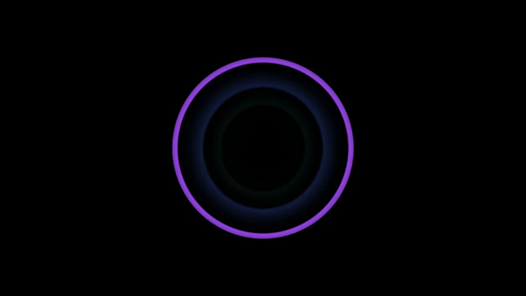

01A loop is a delay
Feed part of a signal back into itself and it comes round again. How long each trip takes, and how much of it survives, is the whole character of the effect:
- In the sound, a trip is a stretch of time: a quarter of a second makes an echo, a few milliseconds a comb or a flanger.
- In the picture, a trip is one frame: last frame's picture is read back under this one's. Read it back a little smaller and every old frame sits inside the new one, which is a tunnel.
Flyback has modules for both, and each takes the fraction that survives a trip as a knob. That knob is what this tutorial is about.
02A tune on a clock
Open Presets, choose Empty, and press F2 for the text view. Type or paste each snippet, and press Ctrl+Enter to build it.
let clock = tempo(bpm: 96)
let beats = clock.beats
let tune = beats |> notes(rate: 1, gate_length: 0.3) [ E4 G4 B4 E5 D5 B4 G4 A4 ]
let pitch = tune |> note(note: _)
let pluck = tune.gate |> adsr(gate: _, attack: 3ms, decay: 250ms, sustain: 0.1, release: 200ms)
triangle(freq: pitch) * pluck |> out.left
out.volume = 0.75A Tempo counts beats, and a Note Sequencer on that count with
rate: 1 plays a note a beat: an E minor arpeggio, up and back down, eight beats round. The Tempo
keeps a name of its own this time, clock, because the echo will want its other output.
03An echo that keeps time
The Echo from the Effects plugin is a stereo delay that counts in steps of the beat rather
than in seconds. Patch the Tempo's first output, beats per second, into its tempo, and
left and right become steps: at the Echo's four steps a beat, 3 is a dotted eighth, and
the right side answers 2 steps after the left. The repeats land on the grid whatever the tempo.
let voice = triangle(freq: pitch) * pluck
let echo = voice |> echo(tempo: clock, left: 3, right: 2, feedback: 0.54, mix: 0.45)
echo |> out.left
echo.right |> out.rightfeedbackis the fraction that comes round for the next repeat: 0.54 leaves about half each time, so a note trails off over five or six repeats. Near 0.9 it hangs on for seconds.mixis dry against wet. At 0.45 the notes stay in front and the repeats sit behind them.- The Echo has two outputs, so the Output gets one on each side. The repeats cross from one to the other.
04A ring on every note
Now something to see. A Circle from the Picture plugin is a shape given as a distance to its
rim, and a Fill turns that into ink: outline is its edge,
width across. A Stroke on the same beats flashes it on each note and lets it fade
within the beat, and the note's place in the tune picks the hue.
let hit = beats |> stroke(rate: 1, curve: 3)
let ring = circle(radius: 0.6) |> fill(distance: _, width: 0.025).outline
ring * hit
|> color.hsv(value: _, hue: tune.index, saturation: 0.7)
|> out.colortune.index is how far through its eight notes the sequencer is, 0 to 1, so every note of the
arpeggio has a color of its own and the same note always has the same one.
05The picture's echo
A Trails reads the last frame back under the new one. zoom just over 1 reads it
from a little further out, which draws it inward, angle turns it a little each frame, and
persist is what each frame is dimmed by on the way round: the picture's feedback.
ring * hit
|> color.hsv(value: _, hue: tune.index, saturation: 0.7)
|> trails(zoom: 1.02, angle: 0.01, persist: 0.95)
|> out.colorEvery ring now slides inward and fades after its note, the way the note's echoes fade
after it, so the last few notes are nested inside the one that is sounding, each in its own color. Turn
persist down to 0.8 for a short ghost and up to 0.98 for a tunnel that lasts seconds.


06One knob for both
The Echo's feedback and the Trails' persist are the same idea, so give them one knob.
Declare it at the top and name it in both places, each over a range of its own:
panel repeats = 0.6, label: "Repeats"
let echo = voice |> echo(tempo: clock, left: 3, right: 2, feedback: repeats(0..0.9), mix: 0.45)
|> trails(zoom: 1.02, angle: 0.01, persist: repeats(0.85..0.985))Why two ranges for one idea: the echo loses its fraction once a repeat, a few times a second, while the trail loses its fraction every frame, dozens of times a second. For the two to fade over about the same time, the picture's number has to sit much nearer 1. Knob at the bottom, both are short; at the top, both hang on.
Press Ctrl+K for the panel and turn Repeats while it plays. Turning a knob rebuilds nothing, so neither the echo nor the tunnel is interrupted.
A trail's trip is one frame, so at 60 frames a second it goes round twice as often as at 30 and fades twice as fast. The echo does not change with it. Set the preview rate under Settings → Picture and the recording rate under Recording to the same number, and what you tuned is what you record.
07The whole patch
All of it, with a description. This is the Two echoes preset, under the ones where the picture and the sound meet.
description "One knob, two loops: a pluck through an echo, and a ring that echoes down a tunnel."
panel repeats = 0.6, label: "Repeats"
let clock = tempo(bpm: 96)
let beats = clock.beats
# The sound: a note a beat, and an echo that keeps time with it.
let tune = beats |> notes(rate: 1, gate_length: 0.3) [ E4 G4 B4 E5 D5 B4 G4 A4 ]
let pitch = tune |> note(note: _)
let pluck = tune.gate |> adsr(gate: _, attack: 3ms, decay: 250ms, sustain: 0.1, release: 200ms)
let voice = triangle(freq: pitch) * pluck
let echo = voice |> echo(tempo: clock, left: 3, right: 2, feedback: repeats(0..0.9), mix: 0.45)
echo |> out.left
echo.right |> out.right
# The picture: a ring on every note, and a trail that carries it inward.
let hit = beats |> stroke(rate: 1, curve: 3)
let ring = circle(radius: 0.6) |> fill(distance: _, width: 0.025).outline
ring * hit
|> color.hsv(value: _, hue: tune.index, saturation: 0.7)
|> trails(zoom: 1.02, angle: 0.01, persist: repeats(0.85..0.985))
|> out.color
out.volume = 0.75
08Where next
- Change
zoomto just under 1, 0.98, and the trail runs outward instead. Giveanglemore and it spirals. - The Feedback module reads the last frame anywhere you point it rather than where it was. The Feedback tunnel preset is rings read back rotated, scaled and dimmed; open it and compare it with the Trails here.
- Any wire can run backwards. In text it is
<-, and the Loop preset builds a filter out of one: an add, a multiply and a wire back into the add. - The Space preset puts a pluck through the delay and then a reverb, which is thousands of short echoes.